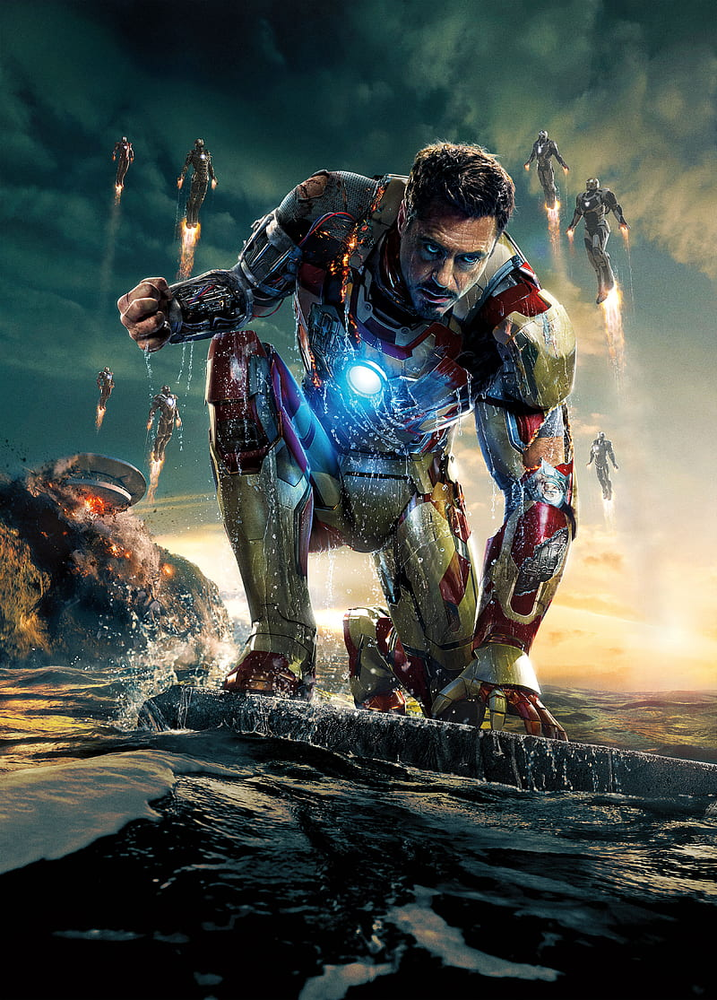
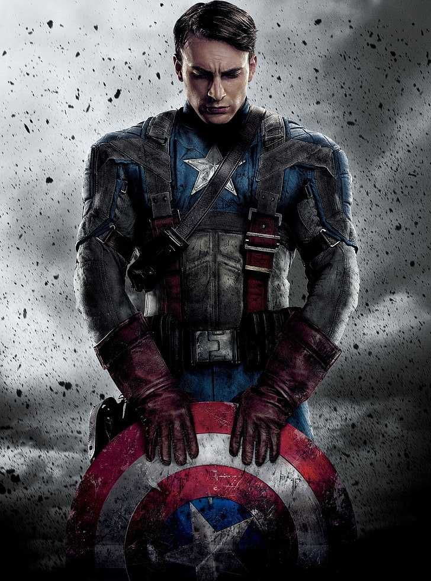
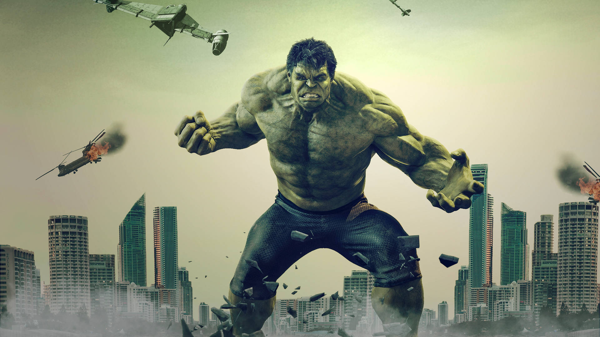
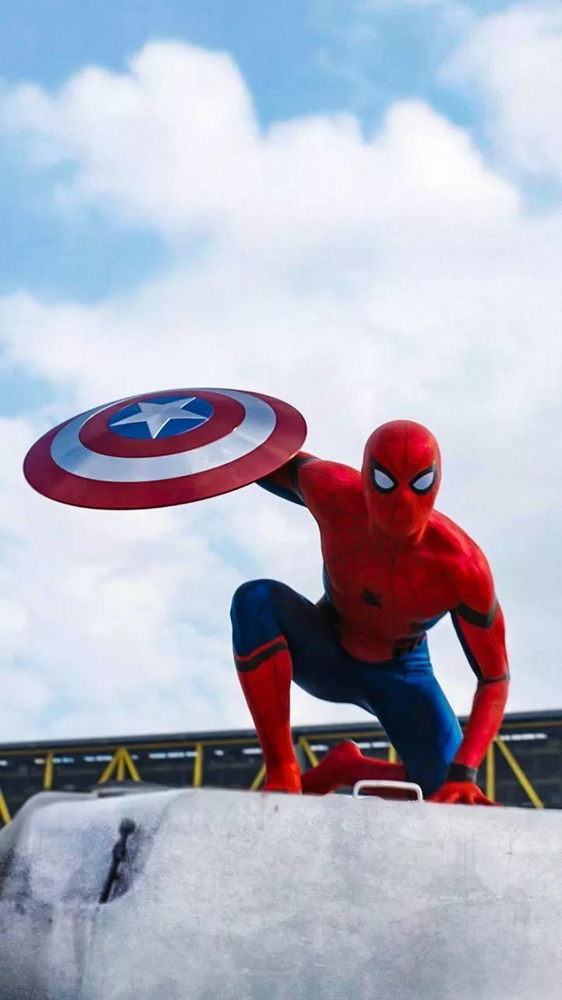
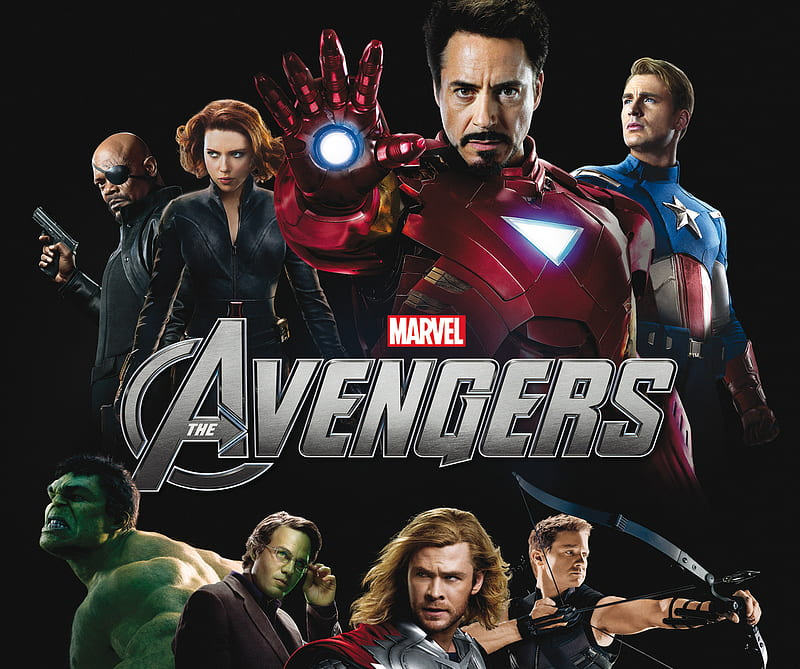
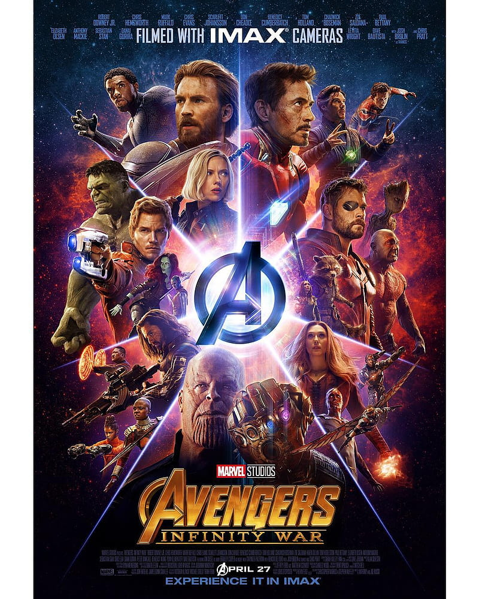
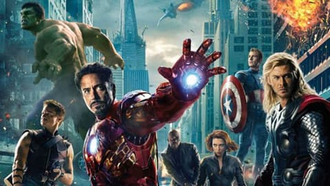
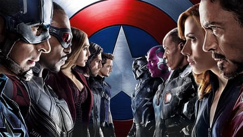
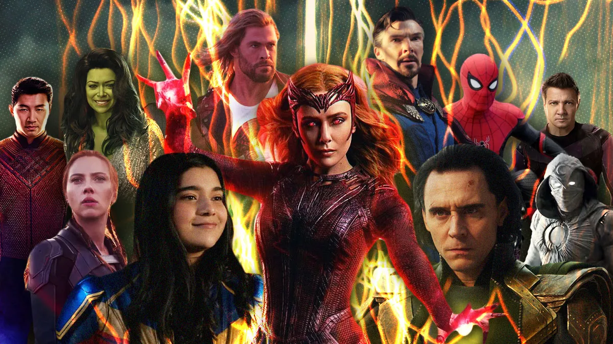
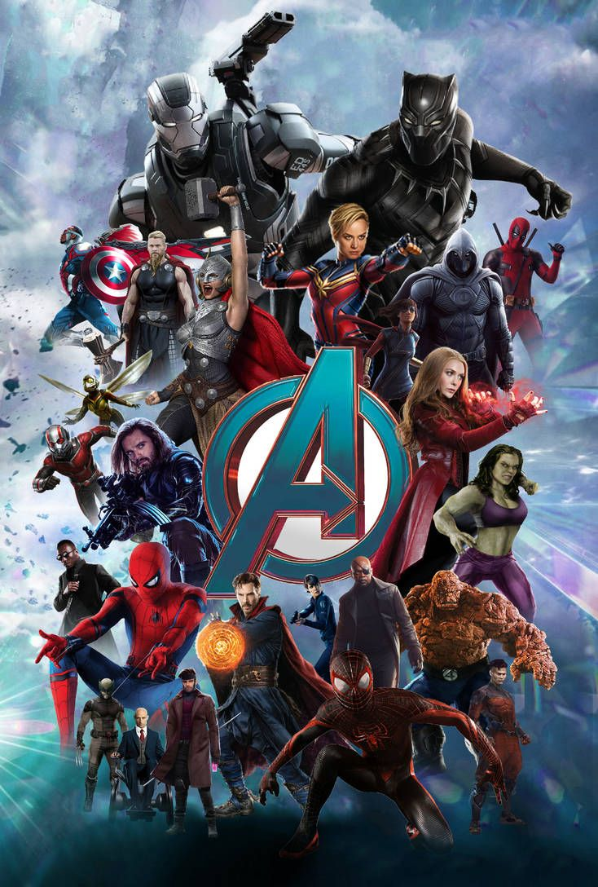

Exploring the Marvel Cinematic Universe

Welcome to the Marvel Universe
This webpage is a tribute to some my Favourite Marvel characters and movies.
Here, you'll explore the legendary heroes, Ironman, Captain America, Thor, Hulk, and Spider-man and
also revisit some of the greatest movies in the Marvel Cinematic Universe, from The Avengers to
Endgame.
Feel free to use the menu above to jump straight to any section of your choice and enjoy the journey
through the Marvel World!
My Favourite Characters
1. Ironman
Tony Stark, also known as Iron Man, is the genius inventor who built the armored suit that made him a hero. His intelligence, humor, and bravery make him one of the most important Avengers.
2. Captain America
Steve Rogers, the first Avenger, is known as Captain America. With his super-soldier strength and unshakable morals, he became a symbol of hope and leadership for the Avengers.
3. The Incredible Hulk
Dr. Bruce Banner transforms into the Hulk when angry. While often misunderstood, Hulk’s unmatched strength and loyalty make him a valuable member of the Avengers.
4. Thor (God of Thunder)

Thor, the God of Thunder, comes from Asgard. With his hammer Mjolnir and control over lightning, he brings power, courage, and a touch of humor to the Avengers team.
5. Spider-Man
Peter Parker, also known as Spider-Man, is the youngest Avenger. With his quick reflexes, web-shooting abilities, and heart for doing good, he brings youthful energy and courage to the team.
Back to TopMy Favourite Movies
1. The Avengers (2012)
This film was the true birth of the Marvel Cinematic Universe as we know it. For the first time, heroes
from individual movies came together, testing whether such a crossover could succeed.
the battles
with Loki and the Chitauri invasion, the story highlighted clashing personalities, Tony Stark’s
arrogance, Steve Rogers’ discipline, and Bruce Banner’s struggle with his inner monster. The movie
redefined superhero storytelling by proving teamwork could shine as brightly as any single hero.
2. Avengers: Age of Ultron (2015)

Age of Ultron explored the dangers of unchecked ambition when Tony Stark’s plan for “a suit of armor
around the world” gave birth to Ultron.
Unlike the first film, the Avengers fought not just an
external villain but the consequences of their own actions. It was darker, more complex, and introduced
key players like Wanda Maximoff and Vision. The movie planted seeds of mistrust within the team, while
also showing the growing cost of being Earth’s protectors.
3. Avengers: Infinity War (2018)
Infinity War shattered the idea that the heroes would always win. With Thanos at the center, the movie balanced dozens of characters while giving real weight to the villain’s motives. For the first time, the Avengers weren’t in control — they were reacting, scrambling, and falling short at every turn. The emotional punches hit hard: Gamora’s sacrifice, Vision’s death, and finally, the snap that erased half the universe. It was a cliffhanger that left fans stunned worldwide.
4. Avengers: Endgame (2019)

Endgame wasn’t just a movie; it was a cultural event. The three-hour epic served as both a love letter
and a farewell to over a decade of interconnected stories. From the quiet grief in the first act to the
time-travel adventure through past MCU highlights, the film balanced nostalgia with fresh drama.
The
climactic final battle, where portals opened and heroes assembled, delivered one of the most iconic
moments in film history. Sacrifices by Iron Man and Black Widow gave the saga emotional closure,
reminding audiences that heroism often comes at the highest cost.
5. Captain America: The First Avenger (2011)

Unlike the flashier heroes, Steve Rogers began as a frail young man with nothing but determination. His
transformation into Captain America was less about super-soldier serum and more about his unshakable
moral compass.
The film grounded the MCU in history, weaving superhero storytelling into World War
II drama. Steve’s romance with Peggy Carter and his self-sacrifice against Red Skull showed why he
became the moral anchor of the Avengers. His journey began here, not as a soldier with power, but as a
man who refused to Back down.
MCU Phases
Phase 1
Phase One is where it all began. This was the foundation of the MCU, giving us the first look at Iron Man, Captain America, Thor, and Hulk. Each hero had their own story, but it all led to the legendary moment when they assembled as the Avengers for the very first time. It was the spark that changed superhero movies forever.
Phase 2

In Phase Two, the stories grew bigger, deeper, and darker. Iron Man dealt with his inner struggles, Captain America uncovered hidden secrets, and Thor faced cosmic threats. New heroes like the Guardians of the Galaxy joined in, adding humor and heart to the universe. The phase ended with Ultron’s rise, testing the Avengers’ strength as a team.
Phase 3
Phase Three was the heart of the MCU’s epic saga. Friendships broke in Civil War, kingdoms rose in Black Panther, and the multiverse began to open through Doctor Strange. Spider-Man swung into the universe, and the Avengers faced their greatest challenge in Infinity War and Endgame — battles that defined sacrifice, loss, and triumph. This phase became the emotional peak of the MCU.
Phase 4
Phase Four marked a fresh start after Endgame. Old heroes passed the torch, and new ones stepped up, like Shang-Chi, the Eternals, and the next generation of Avengers. Disney+ series like WandaVision and Loki expanded the universe in surprising ways, showing us grief, growth, and the dangers of the multiverse. It was a phase of rebuilding and discovery.
Phase 5
Phase Five pushes the story forward into even stranger and riskier territory. The multiverse is no longer just an idea — it’s here, with Kang and new villains raising the stakes. Familiar faces like Ant-Man and the Guardians return, while the stage is being set for the next Avengers. This phase is about what comes after rebuilding: preparing for something even bigger.
Back to TopSome External links
Below are some external links for more insights
Back to Top